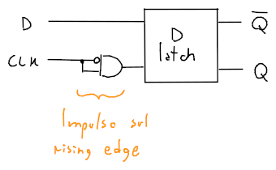
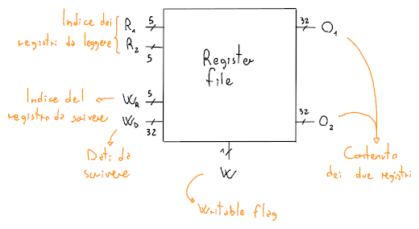
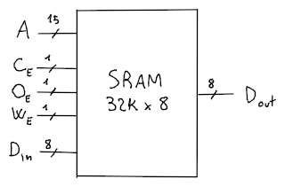

Circuiti sequenziali
I circuiti sequenziali sono circuiti composti da circuiti combinatori (cioè che dipendono solo da input e output) e da un registro. Di conseguenza, oltre che agli input dipendono anche dallo stato del circuito.
S-R Latch
Con questo latch è possibile memorizzare un singolo bit di memoria in modo asincrono.

Quindi, la tabella di verità per il componente sarà:
| 0 | 0 | / | / |
| 0 | 1 | 0 | 1 |
| 1 | 0 | 1 | 0 |
| 1 | 1 | ? | ? |
per cui, quando gli input non avranno effetto sullo stato del circuito, mentre se , il circuito avrà comportamento indefinito.
Clock
Il clock (CLK) è un componente che rende il circuito sincrono rispetto al suo periodo, cioè il tempo minimo richiesto dal circuito perchè diventi stabile.
D latch
Un esempio di circuito sincrono è il D latch, che corrisponde al S-R latch ma con il clock.

Che avrà tabella di verità:
| 0 | 0 | / | / |
| 0 | 1 | / | / |
| 1 | 0 | 0 | 1 |
| 1 | 1 | 1 | 0 |
Questo componente però, è detto trasparente perchè i cambiamenti sono instantanei quando il clock è alto, infatti se cambia mentre anche il latch cambierà stato. Per risolvere questo problema esistono i flip-flop.
Tempistiche
La memorizzazione può avvenire in due modi:
- Level triggered, per cui fa effetto nella durata in cui
- Edge triggered, per cui il circuito viene azionato sul rising- o falling-edge del clock
Generatore di impulsi

Il generatore di impulsi sfrutta il ritardo causato dai componenti per generare un singolo impulso di clock ai componenti per aggiornarli sul rising-edge.
Flip-flop
Esistono due tipi di flip-flop:
-
Semplice, che viene aggiornato sul rising-edge con il generatore di impulsi

-
D flip-flop, che viene aggiornato sul falling-edge sfruttando due D latch

Register file
Un register file è un componente che contiene più singoli registri (ognuno composto da 32 flip-flop con lo stesso clock) e permette la lettura di due registri e la scrittura di uno.

L'input serve ad abilitare la scrittura sul registro , e blocca semplicemente il clock con un AND.
SRAM
La Static RAM fornisce una memoria molto veloce attraverso l'uso dei latch, che non permettono di leggere e scrivere contemporaneamente, visto che sono trasparenti. Un esempio è la memoria cache.
Il blocco di memoria è realizzato con una matrice di latch largo e alto , per cui l'accesso ad ogni cella richiede un indirizzo che ha bit.

dove:
- è l'indirizzo che si vuole leggere/scrivere
- è il contenuto che si vuole scrivere
- è l'output della cella che si vuole leggere
- , , servono rispettivamente ad abilitare l'intero chip, l'output e la scrittura
Per esempio, la struttura di una SRAM da ( righe da bit) sarà:

dove il buffer a tre stati serve per disabilitare gli output agli indirizzi non richiesti e quindi rimuove la necessità di un grande multiplexer.
Per ottimizzarlo ancora e liberarsi del demultiplexer in entrata, si possono utilizzare più SRAM concatenate che dividono la grandezza dell'indirizzo in due parti:
- Parte alta, che identifica la riga di ogni SRAM
- Parte bassa, che identifica con dei multiplexer quale bit in output delle SRAM è quello di interesse, e quindi la colonna di ogni output
Per cui ogni riga, identificata dalla parte alta, di ogni SRAM contiene tutti i bit indirizzabili dalla parte bassa.
DRAM
La Dynamic RAM è meno costosa e più capiente rispetto alla SRAM, ma è anche più lenta.
Sono realizzate tramite una coppia di transistor e condensatore per ogni bit, dove il valore del condensatore viene messo sulla bit line quando la word line, che identifica l'indirizzo, è alta.
I condensatori tengono i valori solo per pochi millisecondi, e quindi necessitano di un refresh dinamico.
SSRAM e SDRAM
Esistono delle alternative alle SRAM e le DRAM, che includono il clock e sono quindi sincrone.